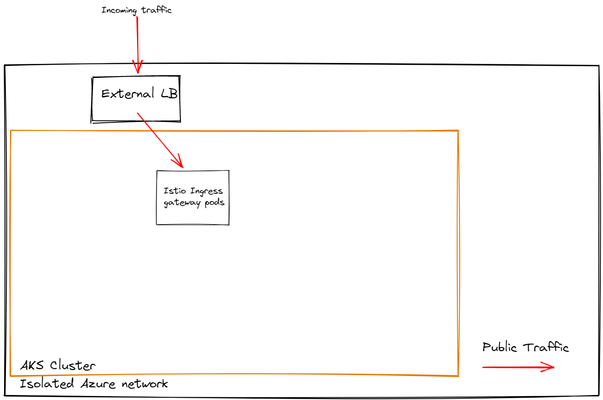

## Istio Service Mesh ### managing microservices ----- ### What is Istio service mesh? networking layer that provides a transparent and language-independent way to offload application functions: - Security Logic: MTLS <!-- .element: class="fragment" --> - Communication Logic: Basic routing concepts <!-- .element: class="fragment" --> - Monitoring Logic: Ingress logging <!-- .element: class="fragment" --> --- #### Components 1. Istiod (formely: pilot, galley, citadel, mixer) 2. Gateway (ingress only, no egress) ----- ### Current snapshot Total of 12 different Istio resources: - Gateways (less than 10) <!-- .element: class="fragment" --> - Virtual services (~100) <!-- .element: class="fragment" --> --- Owned by infra team: - 1 PeerAuthentication: enable MTLS everywhere <!-- .element: class="fragment" --> - 1 Sidecar: allow internal mesh and outbound traffic for sidecars (default) <!-- .element: class="fragment" --> --- Owned by other teams: - 1 AuthorizationPolicy: whitelisting certain IP addresses for mk-payments-integration-mpesa-webapi <!-- .element: class="fragment" --> - 1 DestinationRule: forwarding from video-static.zero.m-kopa.net to zero.video.m-kopa.net <!-- .element: class="fragment" --> - 2 ServiceEntry: extend service mesh to resources outside of kubernetes (e.g. play.google.com) <!-- .element: class="fragment" --> --- Not used at all: 1. Telemetry: tune logs\metrics <!-- .element: class="fragment" --> 2. RequestAuthentication: require JWT on all\some paths for all\some workloads <!-- .element: class="fragment" --> 3. EnvoyFilter: low level modification to envoy behaviour <!-- .element: class="fragment" --> 4. WorkloadEntry: represents a single instance of a virtual machine workload located ouside of mesh <!-- .element: class="fragment" --> 5. WorkloadGroup: represents a logical group of virtual machine workloads that share common properties located outside of mesh <!-- .element: class="fragment" --> ----- ### Gateways defines a load balancer operating at the edge of the mesh servicing incoming or outgoing traffic. The specification describes a set of ports that should be exposed, the type of protocol to use, SNI configuration, etc. Gateways are [owned by Infra team](https://dev.azure.com/m-kopa/M-KOPA%20Software%20Engineering/_git/MK.Infrastructure.AKS?path=/helmfile/configuration/templates) and shared across teams. --- ```yaml [7|9-10|11-14|15-17] apiVersion: networking.istio.io/v1beta1 kind: Gateway metadata: name: mkopa-gateway spec: selector: istio: ingressgateway servers: - hosts: - m-kopa.net port: name: https number: 443 protocol: https tls: credentialName: secret-with-certificate mode: SIMPLE ``` --- Main takeaways: Gateways are managed by Infrastructure team :) ----- ### Virtual Services defines a set of traffic routing rules to apply to a kubernetes service or subset of service based on the matching criteria. The specification describes path based routing, rewrites, header based routing, etc. Virtual services are owned by individual teams (hence not shared). --- ```yaml [6-9|12-15|17-18] apiVersion: networking.istio.io/v1beta1 kind: VirtualService metadata: name: health-probe spec: gateways: - mkopa-gateway hosts: - '*' http: - match: - uri: exact: /health rewrite: uri: /foo route: - destination: host: health-probe ``` --- Main takeaways: - Route based on headers, query paramenters, scheme, method, port, gateway, host, etc <!-- .element: class="fragment" --> - Manipulate headers, paths, hosts <!-- .element: class="fragment" --> - Route to services, subsets, virtual services (including weigths, rewrites, etc) <!-- .element: class="fragment" --> - Retries (attempts, conditions, timeout) <!-- .element: class="fragment" --> - Cors rules (methods, origins, max age, etc) <!-- .element: class="fragment" --> - Fault injection (4xx, 5xx, timeout, percentage) <!-- .element: class="fragment" --> ----- ### Destination Rules DestinationRule defines policies that apply to traffic intended for a service after routing has occurred. These rules specify configuration for load balancing, connection pool size from the sidecar, outlier detection settings, etc. --- ```yaml [6|7|9-12|13-16] apiVersion: networking.istio.io/v1beta1 kind: DestinationRule metadata: name: bookinfo-ratings-port spec: host: ratings.prod.svc.cluster.local trafficPolicy: # Apply to all ports portLevelSettings: - port: number: 80 loadBalancer: simple: LEAST_REQUEST - port: number: 9080 loadBalancer: simple: ROUND_ROBIN ``` --- Main takeaways: - Subsets (canary, a\b testing) <!-- .element: class="fragment" --> - LoadBalancerSettings (LEAST_REQUEST, ROUND_ROBIN, useSourceIp, httpCookie, etc) <!-- .element: class="fragment" --> - ConnectionPoolSettings (maxconnection, timeout, tcpKeepalive, etc) <!-- .element: class="fragment" --> - OutlierDetection (consecutive5xxErrors, consecutiveGatewayErrors, maxEjectionPercent, etc) <!-- .element: class="fragment" --> - ClientTLSSettings and LocalityLoadBalancerSetting (ignore these for now) <!-- .element: class="fragment" --> ----- ### Service Entry ServiceEntry enables adding additional entries into the service mesh, so that auto-discovered services in the mesh can access/route to these manually specified services. A service entry describes the properties of a service: DNS name, VIPs, ports, protocols, endpoints, etc --- ```yaml [7-9|10|12-14|15] apiVersion: networking.istio.io/v1beta1 kind: ServiceEntry metadata: name: external-svc-https spec: hosts: - api.dropboxapi.com - www.googleapis.com - api.facebook.com location: MESH_EXTERNAL ports: - number: 443 name: https protocol: TLS resolution: DNS ``` --- Main takeaways: its possible to integrate external services into the mesh, e.g. from a 3rd party provider. ----- ### Routing examples --- Public routing <div class="r-stack">  <img class="fragment" src="images/public-route-4.png"> </div> --- Private routing <div class="r-stack"> </div> ----- ### demonstratio ----- ### Questions https://github.com/4c74356b41/istio https://istio.io/latest/docs/reference/config/networking/gateway/ https://istio.io/latest/docs/reference/config/networking/virtual-service/ https://istio.io/latest/docs/reference/config/networking/destination-rule/ https://istio.io/latest/docs/reference/config/networking/service-entry/